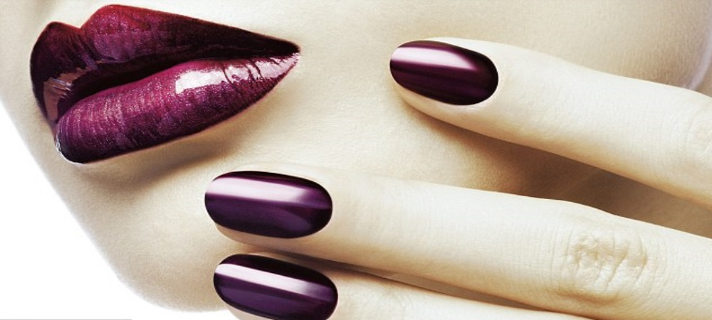
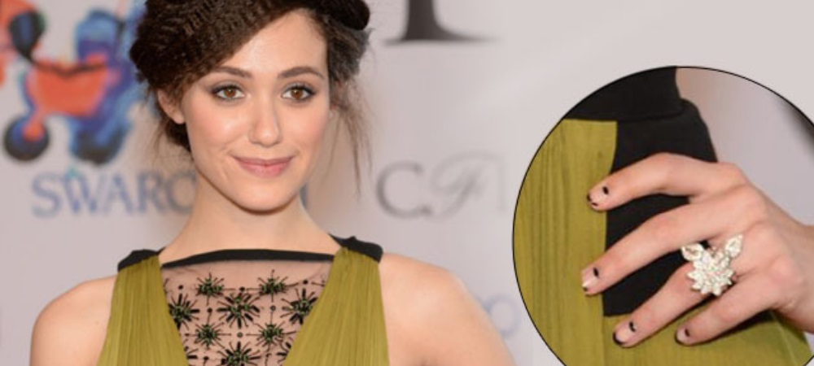

 
Lets Talk About Manicures
"Manicure" is a word that is typically familiar among women. However, it is actually quite common for men to indulge
in manicures too, especially before an important event such as a wedding or business opportunity. People often get or
give themselves manicures for various reasons. Sometimes it's to simply be pampered, as getting a professional manicure
is often a very relaxing experience. Other times it's to get ready for special events, or to simply look one's best on a
daily basis.
Manicures can be done at the home or in a salon, with most people choosing to head to a salon. This is because salons
provide several options for the ultimate manicure. For example, you can choose from hundreds of shades of nail polish or
choose a customized manicure. French manicures are often a popular choice among women obtaining a professional manicure.
Other popular options include American manicures, diamond nails, gel nails, and having cute, trendy designs painted on
your nails. If you don't know the difference between these types of manicures, this article will help you choose which
on is right for you.
An American manicure closely resembles the French manicure. It's beautiful, subtle, and classy all at the same time.
The major difference is that the American manicure is thought by many women to look more natural than the French look.
American manicures usually do not contain a color base, but are painted clear or an opaque white prior to painting the
tips. The tips are still painted white, but don't appear as bright as French manicures.Diamond nail manicures are a
slightly more expensive form of manicure, but for very good reason. The concept formed from creating a base coat made
from real diamonds, which bond to form a hard, protective coating over the actual fingernail. This provides a glamorous
look while helping the nails to grow rapidly. Some places may not use a base coat containing actual diamonds, but the
concept and look remains the same. Gel nail manicures are done using an acrylic base over the top of the actual nail,
providing strength to enhance the growth of the nails. It should be known that eventually this layer begins to break
off, but some women prefer to keep up this form of manicure to keep their nails hard and strong.
For those opting to do their manicures at home, it's possible to achieve the same professional look for a lot less.
Look for professional manicure kits. You can choose from a French, American, or classic (a color is applied to your
entire nail) manicure kit. If your nails are long enough, you can purchase the kits with adhesive strips to help you
perfect the white line that is painted over the tips. If you have short nails but wish to make them look longer, you
will need to purchase artificial tips and the supplies needed for these manicures acrylic powder, bonding solution,
professional nail cutting scissors, and a buffer. Sometimes you can purchase the acrylic kits already containing these
items. However, be careful when choosing an acrylic kit. Choose one from a reputable manufacturer, or visit a beauty
supply store where the kits are the same ones used in nail salons.